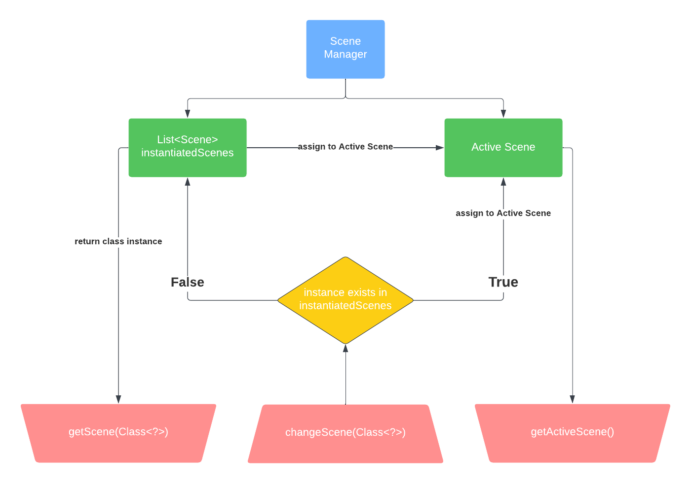

Overview
All scene management is performed in the static SceneManager class. Changing scenes can be done whenever and wherever in your program.
Method Descriptions
<T extends Scene> getScene(Class<T>)
-
Returns scene object
- Returns null if an instance does not exist in instantiatedScenes list
- Parameter receives the scene class who's instance is being returned
changeScene(Class>?<)
- Void method
- If an instance of the scene class exists in instantiatedScenes list, it will mark that scene instance as the active scene
- If there is no instance of the scene class in the instantiatedScenes list, it will create an instance and market that instance as the active scene
getActiveScene()
- Returns the active scene (i.e. scene being updated and rendered)
Scene Manager Hierarchy
- Red = functions
- Yellow = conditions
- Green = attributes
- Blue = class
